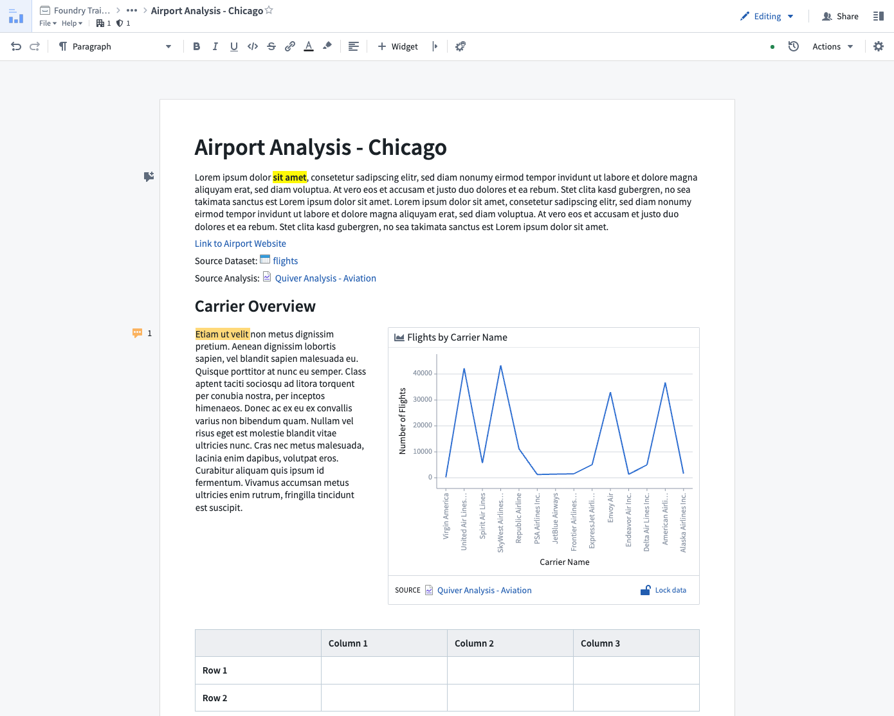

Notepad
Notepad is an object-aware collaborative rich-text editor. In addition to the ability to add and format content like text and images, you can integrate widgets like charts or objects from other Foundry applications, such as Contour, Quiver, Code Workbook, and Object Explorer. You can also create templates that serve as blueprints for generating new Notepad documents.

Features
Notepad's key features allow you to:
- Embed charts, tables, and graphs from other Foundry applications.
- Export and print all Notepad documents with granular control over export presentation (embed appearance, page breaks, etc.).
- Maintain structured links to embedded objects and resources, automatically enriching the underlying ontology.
- Freeze content to capture point-in-time context.
- Templatize documents to easily create report versions based on new inputs.
Use cases
Notepad supports workflows such as:
- Ad-hoc note taking (e.g., capturing notes alongside embeds in investigative workflows).
- In-platform documentation (e.g., documenting pipelines, datasets, or applications).
- Periodic reporting (e.g., generating monthly status reports using templates).
- Templated exports (e.g., creating a new copy of a document template on demand given selected objects).
Notepad is less well suited for:
- Creating dashboards: Notepad does not support dynamic filtering based on user inputs or chart selections. If you would like to create a dashboard to present analytical findings, consider Quiver Dashboards for object or time series data, or, Contour Dashboards for tabular data. Workshop can also be used to create dashboards or more advanced operational applications.
- Complex, page-based rich-text editing: Notepad does not offer the configurability of typical desktop text editors. Notepad is intended to be an easily approachable text editor optimized for integration with the rest of the Foundry platform.